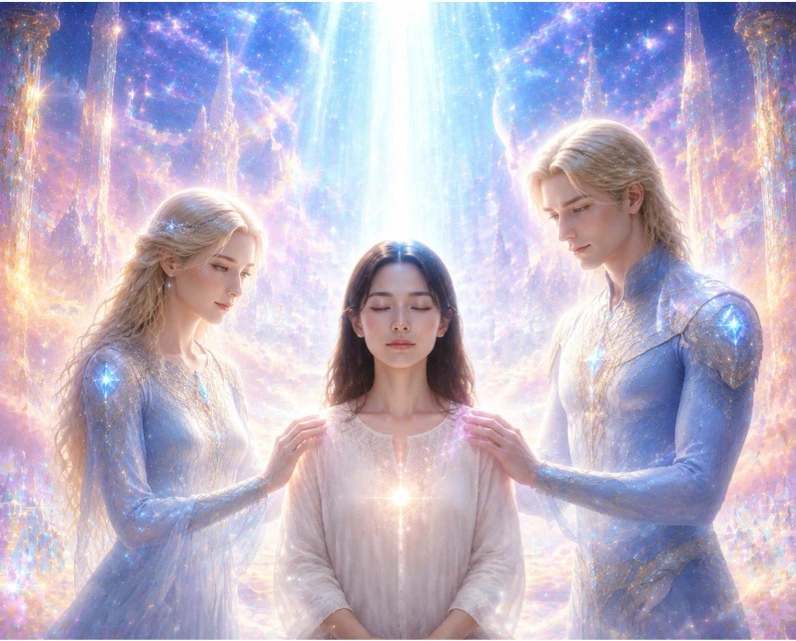

01 / ENCOUNTER宇宙に心をひらくプレアデスとの
プレアデスとの
交流を想う時間。
プレアデス文明とのつながりに心を寄せ、
感じたことや、心に浮かんだ想いを語り合う。
そんな交流セッションを思い描いています。
個人的にプレアデス文明と繋がってサポートをいただきたい方はこちら
https://www.sympathy-ah.com/Pleiadescontact.html （新しいタブで開きます）
どんなふうに受け取るかは、一人ひとりの自由。
それぞれの感覚を大切にできる場へ。